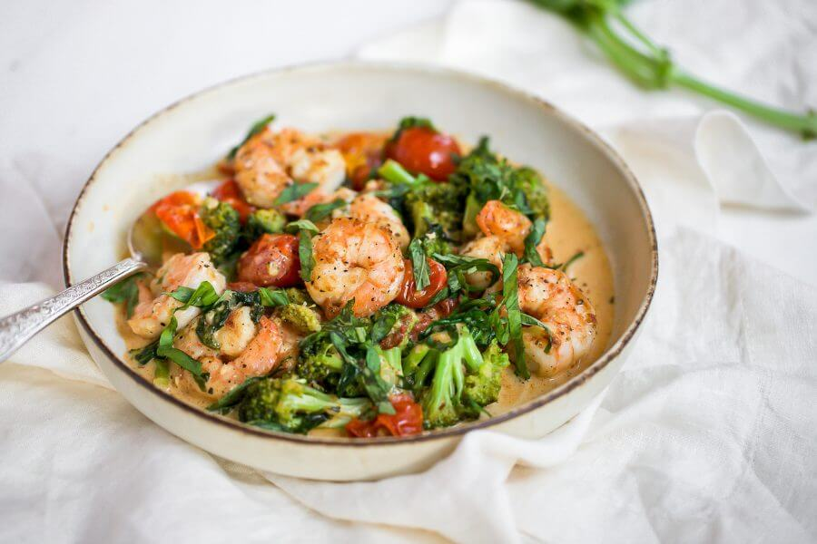

Tuscan Butter Shrimp

Description
These Tuscan butter shrimp, in a delightful cherry tomato and sun-dried tomato cream sauce, can be served over pasta or polenta, or with a salad and toasted sourdough bread.
Ingredients
- 1 pound peeled, deveined large raw shrimp, patted dry
- 1 ½ large zucchinis, thinly sliced lengthwise
- 1/2 teaspoon freshly ground black pepper
- 2 tablespoons oil from jar of oil-packed sun-dried tomatoes, divided
- 1/2 cup drained and finely chopped sun-dried tomatoes in oil
Steps:
- Gather all ingredients.
- Toss shrimp with salt and pepper in a large bowl until well combined. Heat a large high-sided skillet over medium heat. Add 1 tablespoon butter and 1 tablespoon sun-dried tomato oil; heat until shimmering, about 2 minutes. Add shrimp in an even layer, and cook until opaque and pink, 3 to 4 minutes, flipping shrimp halfway through cooking time. Transfer shrimp to a large plate.
- Melt remaining 1 tablespoon butter with remaining 1 tablespoon sun-dried tomato oil in the same skillet; stir in cherry tomatoes, shallot, garlic, and sun-dried tomatoes. Cook, stirring occasionally, until tomatoes are soft and shallot is translucent, about 4 minutes.